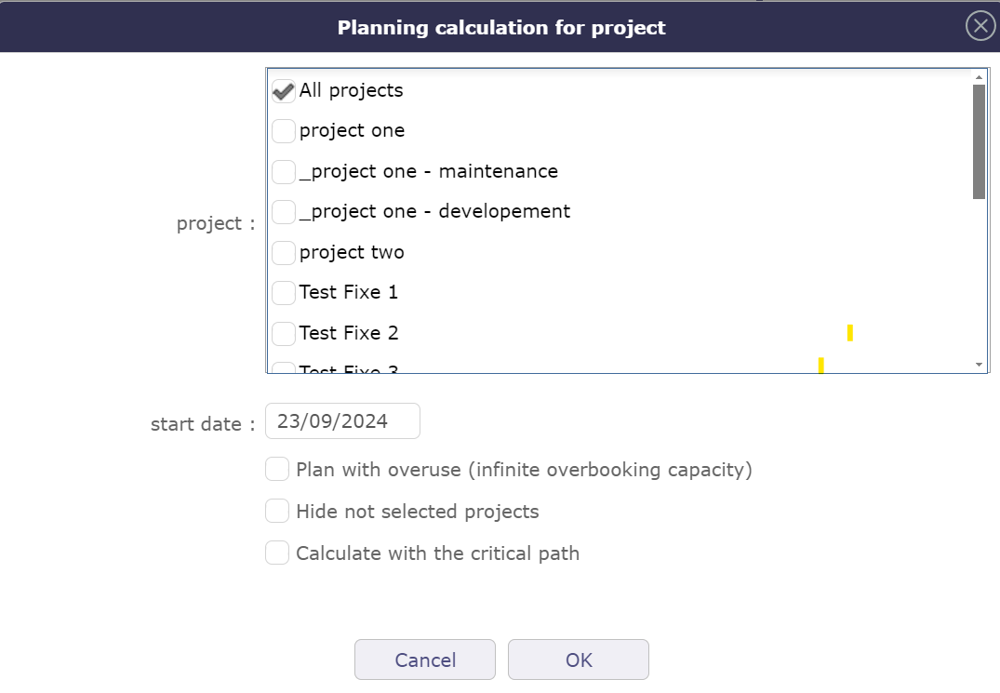
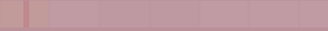

La planification de projet est d’une importance capitale pour assurer le succès de vos objectifs et permet d’estimer les ressources nécessaires, d’établir un calendrier et de définir les indicateurs de performance attendus.
ProjeQtOr offre un large choix de leviers de contrôle pour planifier au mieux votre projet dans des conditions précises.
Le diagramme de Gantt est un outil utilisé en planification et gestion de projet pour visualiser les différentes tâches qui composent un projet dans le temps.
Note
Pour les grands projets comportant de nombreux sous-projets et activités, le nombre de lignes à afficher est limité afin de ne pas dégrader les performances, même si le sélecteur de projet a déjà contextualisé l’affichage.
Lorsque vous apportez une modification à un élément de votre projet, le projet doit être recalculé pour en tenir compte.
Vous avez la possibilité d’utiliser la fonction de calcul automatique qui, si vous effectuez une modification sur l’écran de planification et uniquement sur cet écran, prendra immédiatement cette modification en compte.
Si la modification est effectuée sur un autre écran, même si vous avez sélectionné le calcul automatique, vous devrez relancer le calcul sur l’écran de planification.
Cliquez sur pour lancer le calcul de planification des activités.
Une fenêtre contextuelle apparaît avec la liste des projets.
Les cases à cocher dans la zone de liste vous permettent de sélectionner un ou plusieurs projets à recalculer.

Fenêtre contextuelle de sélection de projet pour le calcul¶
Si vous avez sélectionné un ou plusieurs projets avec le Sélecteur de projet, les projets sélectionnés seront automatiquement cochés.
Choisissez la date à laquelle vous souhaitez recalculer le projet.
En cochant la case « Masquer les projets non sélectionnés », vous n'aurez que les projets sélectionnés dans le sélecteur de projet, qui seront automatiquement cochés.
Important
Lorsque le calcul du planning prend beaucoup de temps, avec des milliers d’activités à planifier, le travail planifié existant est supprimé, puis le calcul est effectué, puis le nouveau travail planifié est enregistré.
Pendant le calcul, les utilisateurs qui font un clic droit sur l’activité ne voient pas les données (le travail planifié est supprimé). L’idée est de retarder la suppression du travail planifié le plus longtemps possible, jusqu’à juste avant la création de nouvelles valeurs.
Basculez le bouton pour activer le calcul automatique à chaque modification.
Fonctionne uniquement sur la vue de planification Gantt.
Si la modification d’un élément est effectuée sur l’écran dédié à l’élément, il faut alors cliquer à nouveau sur BOUTON pour relancer le calcul
Toutes les modifications concernant les affectations (taux, nom ou nombre de ressources, dates…) effectuées ne sont pas affichées sur le nouvel écran de planification tant que le calcul de planification n’a pas été activé, que ce soit en exécution automatique ou non.
Au contraire, l’écran de planification ne changera pas même si des modifications ont été chargées.
Calcul automatique
Calcul différentiel = calcul des projets nécessitant un recalcul après modification.
Calcul complet = calcul de tous les projets
Les calculs sont programmés selon une fréquence de type CRON (toutes les minutes, toutes les heures, à une heure donnée chaque jour, à un moment donné d’un jour donné de la semaine, …)
L’objectif est de pouvoir effectuer un calcul rapide du planning lorsque la fonction de calcul automatique est désactivée, afin d’obtenir un résultat initial directement sur les tâches modifiées sans avoir à recalculer la capacité
Cochez la case pour activer le calcul du chemin critique.
Si cette case n’était pas cochée lors du dernier calcul, l’option d’affichage du chemin critique dans les options du diagramme de Gantt n’affichera rien.
Saisissez le projet sur lequel créer la référence de base.
Vous avez la possibilité de sauvegarder des références de base sur tous les projets.
La liste des références de base existantes, déjà enregistrées, est disponible via cette fenêtre.
Vous pouvez afficher deux références de base sur le diagramme de Gantt. Au-dessus et en dessous des barres du diagramme de Gantt.
Vous pouvez créer autant de références de base que vous le souhaitez par jour, mais vous ne pouvez en sauvegarder qu’une seule par jour. Chaque nouvelle référence de base doit remplacer la précédente.
Vous pouvez modifier votre référence de base ou la supprimer pour en enregistrer une autre.
Message d’erreur sur la gestion de la référence de base¶
Un message d’alerte vous avertit lorsqu’une référence de base a déjà été effectuée le jour en cours.
Vous pouvez modifier l’affichage de l’écran de planification indépendamment des autres écrans.
Si vous choisissez un mode d’affichage vertical globalement, vous pouvez afficher la vue de planification horizontalement sans modifier l’affichage général.
Vous pouvez appliquer la couleur définie pour les types d’activités directement sur le Gantt, exactement comme lorsque vous la définissez dans la section de gestion de votre activité.
Lorsque cette option est activée, vous affichez l’avancement de la production de vos unités de travail sur la barre Gantt de la même manière que le travail réel.
Vous pouvez afficher les deux barres d’avancement en même temps sur la même barre d’activité.
Le détail des barres est visible avec un clic droit directement sur les barres.
Par défaut, ce détail montrant la répartition du travail planifié pour les ressources ne reste pas affiché lorsque vous ne survolez plus la barre après le clic droit.
Activez cette option pour que le détail reste affiché
Le détail en simple clic vous permet de cliquer sur les lignes de la WBS sans déclencher l’édition en ligne et d’afficher le détail de la tâche en un seul clic.
Dans ce mode, vous pouvez double-cliquer sur une ligne pour activer l’édition en ligne.
Lorsque cette option est désactivée, l’édition en ligne est active.
Lorsque vous cliquez sur une ligne dans la structure WBS, l’icône apparaît en fin de ligne. Cliquez dessus pour voir les détails.
Défilement automatique vers la barre de planification¶
Lorsque vous cliquez sur un élément dans la zone de liste (WBS) et que cet élément n’est pas directement visible sur le diagramme de Gantt, un défilement automatique est effectué vers cet élément pour le visualiser sur le graphique.
Cliquez sur le bouton pour imprimer le diagramme de Gantt au format A4 et/ou A3.
La qualité d’impression, malgré l’impression ou l’exportation à une échelle réduite, reste très qualitative et offre très peu de perte de détails dans le diagramme.
Cette fonctionnalité exécutera l’exportation côté client, dans votre navigateur. Ainsi le serveur ne sera pas surchargé comme le fait l’exportation PDF standard.
Elle est beaucoup plus rapide que l’exportation PDF standard.
Avertissement
Cette fonctionnalité techniquement complexe dépend fortement du navigateur et n’est pas compatible avec tous. Elle est compatible avec les dernières versions d’IE (v11), Firefox, Edge et Chrome. Sinon, l’ancienne fonction d’exportation sera utilisée.
Astuce
Activation/désactivation forcée de la fonctionnalité
Pour activer cette fonctionnalité pour tous les navigateurs, ajoutez le paramètre $pdfPlanningBeta=”true”; dans le fichier parameters.php.
Pour la désactiver pour tous les navigateurs, ajoutez le paramètre $pdfPlanningBeta=”false”; La valeur par défaut (lorsque le paramètre $pdfPlanningBeta n’est pas défini) est activée avec Chrome, désactivée avec les autres navigateurs
Lorsque vous effectuez un calcul sur le planning, vous pouvez consulter son historique dédié.
Parallèlement à l’historique des éléments, vous pouvez retrouver les noms des projets que vous avez recalculés, la durée du calcul et si celui-ci s’est terminé avec succès.
Le sélecteur permet de réorganiser les éléments de planification.
Note
Possibilité de déplacer plusieurs tâches à la fois d’un emplacement à un autre en utilisant la touche Contrôle pour sélectionner les lignes puis en les faisant glisser-déposer.
Avertissement
Si vous déplacez une activité vers un nouveau projet, la ressource affectée doit être allouée au nouveau projet pour permettre ce déplacement.
En faisant un clic droit sur chacune des lignes, vous accédez au sous-menu du Gantt qui vous permet d’accéder à certaines actions en passant par le menu principal de l’écran.
La vue des données de progression vous permet de visualiser l’avancement de tous les éléments d’un ou plusieurs projets avec leur consolidation. Chaque ligne correspond à un élément.
Pour afficher ces informations, faites glisser le séparateur entre la zone de liste et le diagramme de Gantt.
Ces lignes peuvent être modifiées directement dans cette vue.
Échelles disponibles : journalière, hebdomadaire, mensuelle et trimestrielle.
La vue du diagramme de Gantt sera ajustée selon l’échelle sélectionnée.
Lorsque vous êtes dans la vue de planification sur la zone WBS et Gantt et la zone de détails, vous pouvez passer d’une échelle à une autre à l’aide de la molette de votre souris.
Molette de souris vers le haut pour augmenter l’échelle*.
Molette de souris vers le bas pour diminuer l’échelle.
Lorsque vous continuez à augmenter après le semestre, on revient en boucle à l’échelle journalière, la plus petite.
En dehors de ces zones, la molette de la souris augmentera le zoom de votre navigateur.
Condition : Calcul rapide - aucun calcul entre projets effectué - représentation graphique - sans charge - modifications de la tâche sans tenir compte des leviers de pilotage - Date de fin planifiée ≤ Date de fin validée
Condition : Calcul rapide - aucun calcul entre projets effectué - représentation graphique - avec charge - modifications de la tâche sans tenir compte des leviers de pilotage - Date de fin planifiée ≤ Date de fin validée
Barre rouge pâle

sans charge et date planifiée supérieure à la date validée¶
Condition : Activités sans travail affecté - Date de fin planifiée > Date de fin validée
Condition : Si une ressource n’est pas ou n’est plus disponible sur une activité.
Le calculateur essaie de planifier la charge de travail.
La ressource affectée à l’activité ne peut pas être planifiée pour cette tâche (absence, calendrier, affectation ou périodes d’affectation, etc.) ; la barre devient alors violette.
Barre rose
Grâce au paramètre de gestion des dates héritées, vous pourrez afficher la couleur rose pour indiquer que la date de fin de cette tâche a été récupérée d’un élément successeur.
Condition : Ajouter du temps de travail supplémentaire aux capacités standard de vos ressources pour planifier plus de projets que vous ne traiterez pas.
Vue surbooking ou surcharge sur le diagramme de Gantt¶
Condition : La capacité de la ressource a été modifiée. Elle peut être en sous-capacité ou en sur-capacité, c’est-à-dire qu’elle fait moins ou plus que son équivalent temps plein.
Condition : La longueur représente le pourcentage d’avancement basé sur la progression réelle (Affecté - Travail réel) par rapport à la longueur de la barre Gantt.
Condition : La longueur représente le pourcentage d’avancement des unités de travail que vous saisissez manuellement (Livré - terminé) par rapport à la longueur de la barre Gantt.
La barre de progression technique est automatiquement réglée à 100% si l’activité qui porte la production est passée à l’état terminé.
Vous pouvez afficher les deux barres de progression en même temps sur la barre du diagramme de Gantt.
Barres de progression pour le travail réel et les unités de travail¶
À l’aide des options, que ce soit dans les paramètres généraux ou dans les paramètres de calcul, vous pouvez modifier les couleurs ou en avoir de nouvelles.
La couleur de la barre s’adapte aux personnes daltonienne si vous avez activé l’option.
BARRE VERTE
la couleur verte de la barre est passée au vert fluorescent.
Les dépendances permettent de définir l’ordre d’exécution des tâches (séquentiel ou concurrent).
Tous les éléments de planification peuvent être liés à d’autres.
Les dépendances peuvent être gérées dans le diagramme de Gantt et dans l’écran de l’élément de planification.
Les dépendances entre les éléments de planification sont affichées avec une flèche.
Lorsque les éléments dépendants de dépendances sont clôturés, la dépendance qui liait cet élément ne sera plus affichée.
Important
Mode strict pour les dépendances
Le mode de dépendance strict oblige l’élément de planification successeur à ne pas démarrer le même jour que le prédécesseur, mais le jour suivant. Même si la tâche est terminée avant la fin de la journée.
Pour que le successeur démarre le même jour ou avant la fin de la tâche prédécesseure, sélectionnez NON pour le mode strict ou vous pouvez également mettre un délai négatif.
Le mode de dépendance strict est un paramètre global. Par défaut, le mode de dépendance strict est défini sur OUI.
ProjeQtOr propose trois types de dépendance. Le quatrième type début-Fin n’est pas représenté.
Fin-Début
La deuxième activité ne peut pas commencer avant la fin de la première activité.
Début-Début
Le successeur ne peut pas commencer avant le début du prédécesseur. Cependant, le successeur peut commencer après le début du prédécesseur.
Fin-Fin
Le successeur ne doit pas se terminer après la fin du prédécesseur, ce qui conduit à planifier « le plus tard possible ».
Quoi qu'il en soit, le successeur peut se terminer avant le prédécesseur. Notez que le successeur « ne devrait » pas se terminer après la fin du prédécesseur, mais dans certains cas cela ne sera pas respecté :
si la ressource est déjà utilisée à 100% jusqu’à la fin du successeur
si le successeur a un autre prédécesseur de type « Fin-Début » ou « Début-Début » et que le temps restant n'est pas suffisant pour terminer la tâche
si le délai à partir de la date de début de planification ne permet pas de terminer la tâche
Lorsque les dépendances sont masquées, le projet replié ou l’activité parente repliée dans la vue de planification par exemple, une flèche orange pâle est affichée devant l’élément sélectionné
Cela signifie que cet élément a une contrainte qui n’est pas actuellement affichée sur la vue de planification.
La section de gestion est adaptée à chaque élément planifiable.
Pour une activité, cette section vous permet de personnaliser les barres de progression, tant pour l’affichage que pour le calcul de la charge affectée.

 pour afficher le premier niveau de prédécesseurs de l’élément sélectionné
pour afficher le premier niveau de prédécesseurs de l’élément sélectionné pour afficher tous les prédécesseurs de l’élément sélectionné
pour afficher tous les prédécesseurs de l’élément sélectionné pour afficher tous les successeurs de l’élément sélectionné.
pour afficher tous les successeurs de l’élément sélectionné. pour effacer la sélection du prédécesseur ou du successeur
pour effacer la sélection du prédécesseur ou du successeur
 .
.


apparaît en fin de ligne. Cliquez dessus pour voir les détails.
pour fermer le détail

 pour imprimer le diagramme de Gantt au format A4 et/ou A3.
pour imprimer le diagramme de Gantt au format A4 et/ou A3. pour lancer l’exportation.
pour lancer l’exportation.


 Projet à recalculer (le diagramme de Gantt à afficher avec les derniers paramètres)
Projet à recalculer (le diagramme de Gantt à afficher avec les derniers paramètres) Projet en construction
Projet en construction Activité
Activité Jalon
Jalon Session de test
Session de test permet de réorganiser les éléments de planification.
permet de réorganiser les éléments de planification.
 pour enregistrer la modification
pour enregistrer la modification pour modifier la ligne
pour modifier la ligne

 pour les gérer.
pour les gérer.


 dans la section correspondante pour ajouter un lien de dépendance.
dans la section correspondante pour ajouter un lien de dépendance. pour supprimer le lien de dépendance correspondant.
pour supprimer le lien de dépendance correspondant.

Fin-Début
Début-Début
Fin-Fin

{kind=link}
{kind=link}
{kind=link}
{kind=link}
{kind=link}
{kind=link}


 Charge de travail planifiée
Charge de travail planifiée{kind=link}
 Charge excédentaire sur les dates
Charge excédentaire sur les dates{kind=link}
 Absence de la ressource
Absence de la ressource